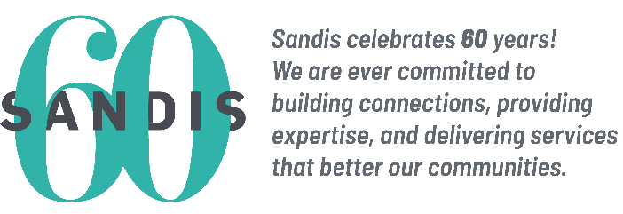

Sandis
Sandis is a professional services firm specializing in traffic engineering, multi-modal and complete streets design, civil engineering, land surveying, stormwater management, utility locating, construction staking, and planning. Established in Northern California in 1965, Sandis is a California Corporation comprised of 145 employees. Sandis’ expertise is expansive. We service public and private clients in the civic, public works, academic, hospitality, healthcare, justice, corporate, and commercial sectors. Sandis’ designs achieve economic, social, and ecological sustainability to improve the communities where we live, work, and play.